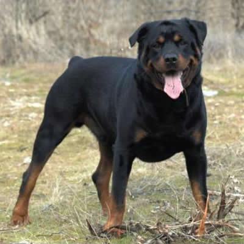

Rottweiler
Weight: 50-55 kg
Coat: Short Hair
Color: Black-Brown
Rottweiler-ul este un caine de talie medie, de culoare neagra cu pete ruginii pe obraji si bot, labe si membre. Crescatorii de Rottweiler vizeaza un caine de o mare forta , negru acoperit cu marcaje clar definite, asa zisele puncte de foc, a caror putere si aspect nu duce lipsa de noblete si care este deosebit de bine adaptat pentru a fi un caine de companie, serviciu sau de lucru. Exista si o varietate de Rottweiler rosie (roscata) cu pete maron.